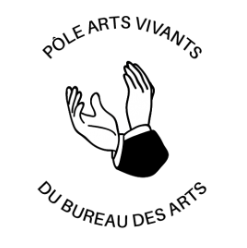

Art organizations
Details
Direction of the Pole for performing arts: dance, theater, circus
Link for Art Desk website

Realization of "Artifices" emissions, the art section videos
Link for Sciences Po TV website
Captain of this Sciences Po dance organization
Link for Art Core page
Teaser
Want to know more about what we do?
Organization of Dance Shows
Sciences Po annual dance show link
Competition with other Sciences Po campuses
- MINI-CRIT
- CRIT